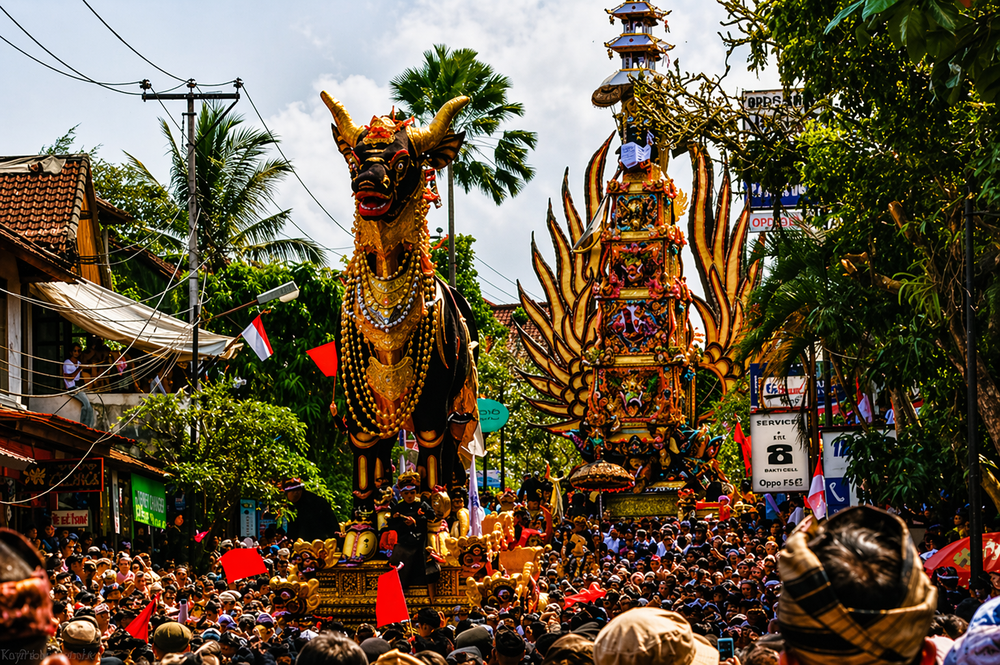
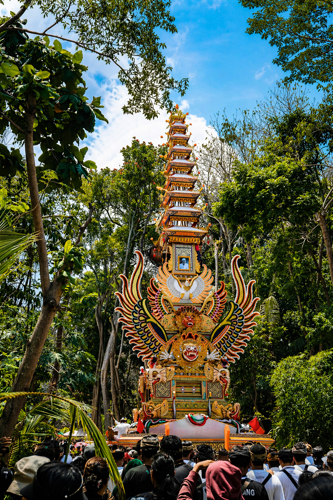
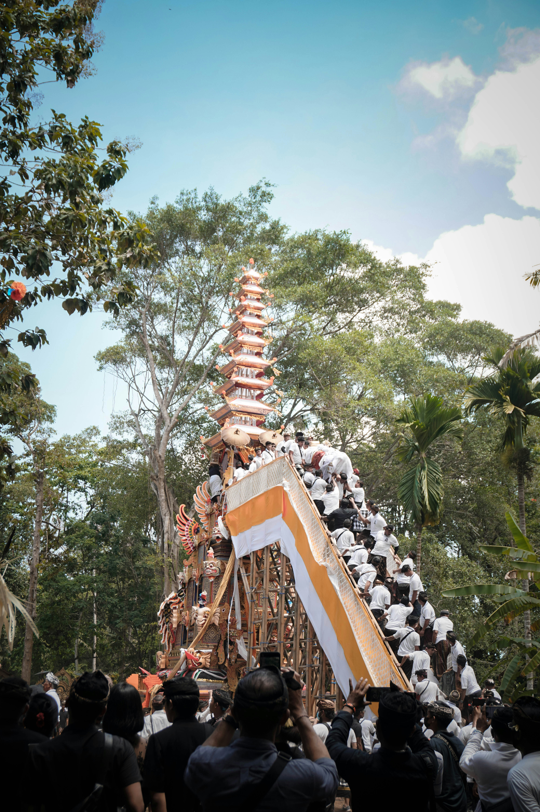

PITRA YADNYA CEREMONY
A sacred Balinese cremation ritual that honors ancestors, returns the body to nature, and helps the soul continue its spiritual journey.
Ngaben is one of Bali’s most important life-cycle ceremonies. It is part of Pitra Yadnya, a sacred offering dedicated to ancestors.
The ritual symbolizes returning the physical body to the natural elements, while prayers guide the soul onward.
Although it follows death, Ngaben is also a ceremony of love, respect, gratitude, and spiritual release.
Families, neighbors, and traditional communities often work together to support the ceremony and its preparations.
Many ceremonies are held privately according to family tradition, readiness, and religious guidance.
Some villages organize collective ceremonies so several families can participate together.
A grand and elaborate cremation ceremony may be held for royal family members, respected Pedanda (high priests), or major traditional figures.
While the scale may differ, every Ngaben shares the same sacred intention: honor, prayer, and the soul’s journey.
Unlike seasonal festivals, Ngaben does not happen on one universal date. Each ceremony follows family decisions and ritual timing.
Information usually comes from local communities, village announcements, trusted local contacts, or regional news.
Large and visually spectacular ceremonies are more likely during Pelebon or important community cremation events.
Ngaben can take place across Bali in villages, family compounds, royal areas, and ceremonial grounds.
Ngaben is a sacred ritual, so respectful behavior is essential at all times.
Wear modest clothing and avoid treating the ceremony as entertainment.
Observe directions from families, village officials, or organizers.
Look beyond the visuals and appreciate the ceremony’s spiritual depth.


